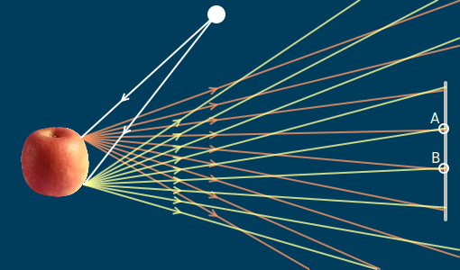
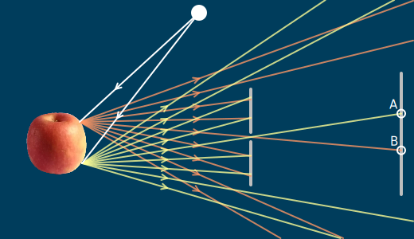
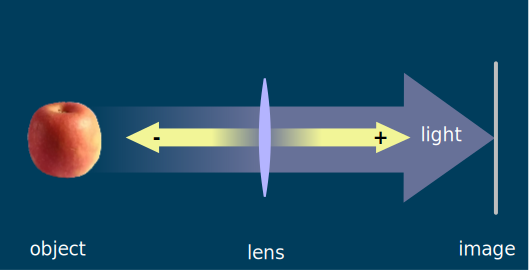
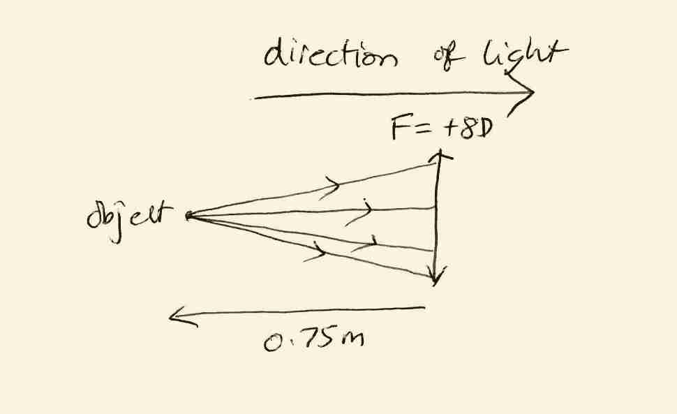
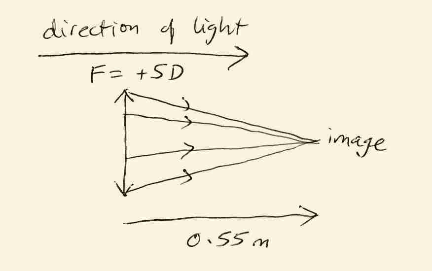

Light is made up of particles called photons, which travel in straight lines called rays until they hit an object. When photons hit transparent objects, they change direction as they enter or leave the object (refraction). For objects that aren't transparent, photons are either absorbed by the object or will bounce off it (reflection). If the object isn’t shiny, the photons can bounce off in any direction. This is called diffuse reflection. These diffusely reflected rays spread out, or diverge (Figure 1).
The reflected rays carry information about the objects they have come from. However, in Figure 1, if we try to capture and use the light reflecting off the apple, by putting in a screen to absorb the light, we only get an overall measure of how bright it is. We can't tell exactly where the light is coming from, so we can't figure out what the object actually is.

Figure 1. A light source at the top of the picture sends out many rays of light, two of which are shown striking an object and being diffusely reflected. Each of the white rays coming from the light source consists of many photons, so when they hit the object, they reflect off in random directions to form a fan of diverging rays.
On the right, a screen (represented by the grey line) has been set up to catch the light reflected from the object. There is a problem, however, in that we cannot tell where the light is coming from. Both points A and B on the screen catch light from different places on the object.
To make sense of the world, we don't just need to know the total amount of reflected light, we also need to know where it is coming from. One simple way to achieve this is to use a “pinhole”, which is an opaque barrier with a tiny (i.e. pin-sized) hole in it. The hole is so small that effectively only one ray of light coming from any point on the object can get through it. When a ray of light then hits a screen (Figure 2) we not only know how much light is being reflected, but from where, since only light coming through the pinhole in a certain direction can hit the screen at that point. This is an image: a pattern of light where we know which direction the light is coming from at all points in the pattern. (Notice that the image from a pinhole is flipped upside down and left to right.)

Figure 2. If an opaque barrier with a tiny hole (called a pinhole) is placed between the object and a screen, an image is formed on the screen. The hole is so small that only one ray from each point in the object is allowed through.
Now the light hitting point A comes from one direction, and the light hitting point B comes from a different direction, so we now know something about where the light is coming from. This is an image.
The drawback with pinholes is that very little light gets through the hole, so the image is typically very dim. If we could gather all the light rays diverging from a single point, and converge them back to a point, we could make the image much brighter. This is in fact what a lens does (Figure 3). Because a lens captures a lot of rays, each point on the image is brighter than with the pinhole and the lens image, made from all these points, is brighter too. Just like a pinhole image, the lens image is also flipped upside down and left-to-right.
Figure 3. A lens catches the divergent light coming from a point on an object and converges it onto a point on an image. It does this simultaneously for all the points on the object. The light converging on point A or point B all comes from the same place, so again we know something about where the light is coming from.
The icon to the left indicates that this is an interactive picture. If you press and hold it you can see what parts of the picture you can click and drag. Here, you can click and drag the points on the apple where light is reflecting, and see how that changes where it converges onto the image. By doing so, you can show that the lens creates a focused point of light from every point on the apple, and the position of that focused point depends on where the light is coming from.
So a lens creates an image by capturing divergent light from all points on an object, and converging them to different points on an image. To describe exactly how lenses work, we need to get more precise about what is meant by converging light and diverging light. That's what we will deal with next.
Convergence
Converging light is light that is coming together, eventually to a single point, like the light leaving the lens in Figure 3. You would expect a very convergent bundle of rays to come together quickly, while a less convergent bundle of rays should take further to come together (see Figure 4).
Figure 4. You can use the slider to change the convergence of light leaving this lens. A bundle of rays with high convergence will come to a point quickly, so the distance between the lens and the convergent point is small. A bundle of rays with low convergence will come to a point more slowly, so the distance from the lens to that point is longer.
In the diagram, the rays have stopped when they converge to a point. In reality, if there was no image screen to stop them, they would continue and diverge again. You can see this by clicking the checkbox marked “continue rays”
Convergence is thus inversely related to the distance it takes the rays to come together to a point: more convergence means less distance. Let’s define the convergence of light leaving a lens as
\[\text{convergence} = \frac{1}{\text{distance from lens to point of convergence}}\tag{1}\]
Since the point where the light converges is often where the image forms (as in Figure 3), we can also think of convergence as
\[\text{convergence} = \frac{1}{\text{distance from lens to image}}\tag{2}\]
In almost all optical calculations, distances are measured in metres. The units of convergence are dioptres (abbreviated \(\text{D}\), or equivalently \(m^{-1}\)). For example, if a bundle of rays leaving a lens converges to a point which is \(0.5\text{m}\) away from the lens, then the convergence of the light when it leaves the lens is, according to Equation (1), \(1/0.5 = 2\) dioptres, or \(2\text{D}\).
Equation (1) can be rearranged as:
\[\text{distance from lens to the image} = \frac{1}{\text{convergence}}\tag{3}\]
Using this formula, if we know that a bundle of light rays leaving a lens has a convergence of say \(5\text{D}\), then they will converge to a point that is \(1/5 = 0.2\) metres away from the lens. If the light leaving the lens has a convergence of \(10\text{D}\), it will converge to a point that is \(1/10 = 0.1\) metres from the lens. And so on.
So if we know the convergence of the light leaving the lens, we can work out where the image appears: it’s where all the bundles of converging light narrow down to a point. The convergence of the light leaving the lens depends on two things: the divergence of the light entering the lens, and the converging ability of the lens itself. We’ll look at these next.
Divergence
Light rays diverge, by definition, if they are spreading apart. The divergence of a bundle of rays, when they hit a lens, is related to how fast they are spreading apart when they hit it. Figure 5 shows a bundle of rays diverging from a single point and hitting a lens. By moving the slider, you can change the divergence of the light.
Figure 5. You can use the slider to see what happens when you change the divergence of light. To get a bundle of rays with high convergence, the rays must start close to the lens. A bundle of rays with low convergence must start a long way away from the lens.
Highly divergent rays must come from a point which is quite close to the lens, and less divergent rays come from a point which is further away. So, like convergence, there is an inverse relationship between distance and divergence: more divergence means less distance.
Let’s define the divergence of a bundle of light rays coming from a point on an object, when it hits a lens, as
\[\text{divergence} = \frac{1}{\text{distance from lens to the object}}\tag{4}\]
As before, the distance is measured in metres and the divergence is in dioptres. However, divergence is in some sense the opposite of convergence, so we need some way of showing this. In optics, we do this by making divergence a negative number.
For example, suppose a bundle of rays is diverging from an object which is \(125\text{mm}\) (or \(0.125\text{m}\)) away from a lens. Using Equation (4), the divergence of the light when it hits the lens is \(1/0.125 = 8\text{D}\). Because divergence is negative, we stick a minus sign in front of it, to get \(-8\text{D}\). Any time you see negative dioptres, you know you’re dealing with divergent light.
Just like convergence, the divergence Equation (4) can be rearranged as
\[\text{distance from lens to the object} = \frac{1}{\text{divergence}}\tag{5}\]
For example, suppose some light has a divergence of \(-4\text{D}\) when it hits a lens. The formula says that the distance from the lens to the object is then \(1/(-4) = -0.25\text{m}\). That is, the distance from the lens to the object is negative. What could that mean?
The Sign Convention
A negative distance is an example of what is called the sign convention, summarized in Figure 6. In optical calculations, some distances are deemed to be positive and some are negative. The sign convention can be set down in a few rules:

Figure 6. The sign convention. Light travels from the object through the lens to the image. This is left-to-right. The direction going from lens to object is opposite the direction of light, so it is a negative distance. The direction going from lens to image is the same as the direction of light, so it is a positive distance.
Click here to see the sign convention for light travelling in the opposite direction.
All distances are measured from the lens we are working with.
Each measured distance has a direction, which is the direction you'd have to travel to go from the lens to your destination. In Figure 6, the distance from the lens to the apple is left, because if we started at the lens, we’d have to move left to get to the apple. The distance from the lens to the image screen is right, because if we started at the lens, we’d have to move right to get to the screen.
A distance whose direction is the same as the direction of the light is positive. In Figure 6, the distance to the image is the same direction as the direction of the light, so it’s positive.
A distance whose direction is the opposite of the direction of the light is negative. In Figure 6, the distance to the apple is opposite the direction of the light (rightward), so it’s negative.
The sign convention is slightly tricky, but it gets easier with practice. (Also, to be fair, there are a few times that it's best to just outright ignore it, but we'll get to those.)
The benefit of the sign convention is that we don’t need separate definitions for divergence or convergence any more; we only need one definition, which we will call vergence:
\[\text{vergence} = \frac{1}{\text{distance from lens to the object or image}}\tag{6}\]
The sign of the vergence tells you whether the light is converging or diverging: negative vergence means diverging light, and positive vergence means converging light.
If we know the convergence or divergence of the light hitting or leaving the lens, we can work out the distance to the image or object by
\[\text{distance from lens to the image or object} = \frac{1}{\text{vergence}}\tag{7}\]
The distance may be either positive or negative, and that tells us which direction we should travel, starting from the lens, to find the object or the image. If it’s a positive distance, we travel in the same direction as the light, and if it’s a negative distance, opposite the direction of the light.
The Thin Lens Equation.
Figure 7 shows a lens forming a sharp image of a single point object, like one of the bundles of rays in Figure 3. In a real situation, the object and image are composed of many points, as in Figure 3, but if we know what happens to a single point, we know what happens to all of them. Light diverges from the point object and hits the lens. The lens changes this to convergent light, and this converges to a single point, which is the image. In Figure 7, the object is \(1\text{m}\) away from the lens, to the left; and the light converges to a point \(0.33\text{m}\) away from the lens, to the right.
Figure 7. The object is \(1\text{m}\) to the left of the lens, and the image forms \(0.333\text{m}\) to the right of the lens. The lens is drawn as a double-headed arrow, which is a standard symbol for a converging lens. Small arrowheads on the light rays show the direction the light is travelling.
You can grab and move the light to different distances and see what image distance occurs. Note that if you get the object too close to the lens, the image distance gets very large, until at some point the light leaving the lens doesn't converge any more.
What happens to the image position when the object moves away from the lens? What happens to the image when the object moves towards the lens?
Let’s work out the vergences of the light entering and leaving the lens. The light in the diagram is travelling rightward. The object is left of the lens, which is opposite the direction of light, so (from the sign convention) the distance is negative. Thus, the distance from lens to object is \(-1\text{m}\), and the vergence of the light when it hits the lens is \(1/(-1) = -1\text{D}\).
The image is to the right of the lens, so it is a positive distance. The light leaving the lens converges \(0.333\text{m}\) away from the lens, so the vergence of the light as it leaves the lens must be \(1/0.333 = 3\text{D}\).
What happened to the vergence of the light as it passed through the lens? It hit the lens with a vergence of \(-1\text{D}\) and left the lens with a vergence of \(3\text{D}\). So the lens had the effect of adding \(4\text{D}\) of convergence to the light (because \(-1+4=3\)).
Because Figure 7 is interactive, you can try a few other distances. Here are some in a table, with calculations:
Distance from lens to object
Distance from lens to image
Vergence of light entering lens
Vergence of light leaving lens
Change in vergence
\(-1\text{m}\)
\(0.333\text{m}\)
\(-1\text{D}\)
\(3\text{D}\)
\(3-(-1)=4\text{D}\)
\(-0.883\text{m}\)
\(0.349\text{m}\)
\(-1.13\text{D}\)
\(2.87\text{D}\)
\(2.87-(-1.13)=4\text{D}\)
\(-1.249\text{m}\)
\(0.313\text{m}\)
\(-0.8\text{D}\)
\(3.19\text{D}\)
\(3.19-(-0.8)=3.99\text{D}\)
The last column (the change in vergence as the light goes through the lens) is always close to \(4\text{D}\) and, if it wasn't for rounding, would be exactly \(4\text{D}\). So this lens always adds \(4\text{D}\) of convergence to the light as it passes through it.
This is all that lenses do: they change the vergence of the light by a fixed amount, called the power, of the lens. The lens in Figure 7 has a power of \(4\text{D}\), because it always changed the vergence of the light passing through it by that amount. (Note that when we write down positive focal powers, we normally put a plus sign in front of them, so the power of this lens is written as \(+4\text{D}\)).
When the object gets too close to the lens, the vergence of the light entering the lens is greater than its power. In this case, the light leaving the lens is still divergent, and so does not converge on an image. An example is in this table:
Distance from lens to object
Distance from lens to image
Vergence of light entering lens
Vergence of light leaving lens
Change in vergence
\(-0.193\text{m}\)
?
\(-5.18\text{D}\)
\(-1.18\text{D}\)
\(4\text{D}\)
The vergence leaving the lens can't be worked out from the distance to the image, because there is no image. Instead, the value of \(-1.18\text{D}\) in the fourth column comes from the fact that the lens always adds its power (which for this lens is \(4\text{D}\)) to the vergence entering it.
The Equation Itself.
All this can be summarized in a simple equation called the thin lens equation1
This can be abbreviated to save writing so much. The abbreviation we’ll use is
\[V_{in} + F = V_{out}\tag{8}\]
In this equation, \(V_{in}\) means the Vergence of the light going in to, or hitting, the lens. Typically, \(V_{in}\) is equal to \(1/\text{(distance from lens to object)}\). \(F\) is the Focal power of the lens.
\(V_{out}\) means the Vergence of the light coming out of, or leaving, the lens. \(V_{out}\) is the same as \(1/\text{(distance from lens to image)}\), because the light leaving the lens typically converges to form an image. That means that the image forms at a distance of \(1/V_{out}\), as per Equation (7).
Almost all optics involving lenses can be analyzed and understood using the thin lens equation, so it’s really, really important.
Basic Optical Calculations.
The main use of the thin lens equation is for calculations involving image and object distances. The best way to see how to use the thin lens equation is to look at a few examples:
Example 1
An object is placed \(75\text{cm}\) to the left of a lens which has a focal power of \(+8\text{D}\). Where does the image form?
Answer
Until you get good at these calculations (and often even then) it is a good idea to start with a sketch to makes it clear where everything is, and what sign the distances are. This is the sketch I drew for this example:

The sketch includes arrows on the rays of light to show which direction they are travelling and arrows at the end of every distance to show which direction you travel when you’re measuring the distance. (Note that the distance has been changed to metres, which you have to do in optical calculations.) It also includes the direction of the light at the top. In other respects, it looks a lot like Figure 7.
Next, we need to work out whether the object distance is positive or negative. The light is travelling to the right in the sketch. The object is to the left of the lens. That’s opposite the light direction, so it’s a negative distance, \(-0.75\text{m}\) (remember, all distances should be in metres).
Next we have to work out the vergence of the light from the object. The vergence \(V_{in}\) of the light entering the lens is one over the distance to the object: \(V_{in} = 1/(-0.75) = - 1.33\text{D}\) (rounded to two decimal places).
The focal power of the lens is \(F=+8\text{D}\), so the vergence of the light leaving the lens is \(V_{out}=V_{in} + F = -1.33 + 8 = +6.67\text{D}\), according to the thin lens equation. This is positive so the light leaving the lens is converging.
Finally, we convert the vergence \(V_{out}\) into a distance. The distance to the image is one over the vergence, so the light converges to a point which is \(1/6.67 = 0.15\text{m}\) from the lens. Because it is a positive distance, the point of convergence (and hence the image) is to the right of the lens.
Our conclusion: the image forms \(0.15\text{m}\) to the right of the lens.
Example 2
A lens with a power of \(+5\text{D}\) forms a sharp image \(550\text{mm}\) to its right. Where was the object?
Answer
The sketch for this problem:

Here, the rays leave the lens and converge to a point, where the image is.
The distance to the image is positive because it’s to the right of the lens (same direction as the light). Thus the vergence of the light leaving the lens \(V_{out}\) must be \(1/0.55 = 1.82\text{D}\).
The thin lens equation is \(V_{in} + F = V_{out}\). Since \(F\) is \(+5\text{D}\) and \(V_{out}=1.82\text{D}\), the equation becomes \(V_{in}+5=1.82\). Solve this equation by subtracting \(5\) from both sides to get \(V_{in} = -3.18\text{D}\).
The distance to the object is \(1/V_{in}\), so the object is at \(1/(-3.18) = -0.314\) metres from the lens. A negative distance means the object is to the left of the lens.
Example 3
An object is placed \(75\text{cm}\) to the right of a lens, and a sharp image forms \(25\text{cm}\) to the left of the lens. What is the power of the lens?
Answer
The sketch for this problem:
This time, the light is travelling leftwards from the object through the lens to the image. The object is to the right of the lens, which is opposite the direction of the light, so it’s a negative distance (again). The image is to the left of the lens, so it’s a positive distance.
The vergence entering the lens is one over the distance to the object, \(V_{in}=1/(-0.75)=-1.33\text{D}\)
The vergence leaving the lens is one over the distance to the image, \(V_{out}=1/0.25=4\text{D}\)
The thin lens equation is \(V_{in}+F=V_{out}\). Substituting in the values we know gives us \(-1.33+F=4\). Adding 1.33 to both sides gives \(F=+5.33\text{D}\), which is the answer.
Note that vergences have been rounded to 2 decimal places here, but full accuracy has been used in the calculations.
Focal Length
So far, our main concern has been with light that is convergent or divergent. However, some interesting things happen when light is neither. A bundle of light rays that is neither divergent nor convergent has rays which aren’t spreading apart or coming together. The only way that can happen is if the rays of light are parallel.
Why? Because parallel rays aren’t diverging, so their vergence can’t be negative. Because parallel rays are not converging, their vergence can’t be positive either. The only number that isn't positive and isn't negative is zero. So parallel light has zero vergence.
Light coming from distant objects is almost parallel. For example, the horizon is about \(5000\text{m}\) away. Light from the horizon entering a lens has a divergence of \(V_{in}=1/(-5000) = -0.002\text{D}\). That’s pretty close to zero (although still negative). The sun is about 150 billion metres away from us, so sunlight entering a lens on earth has a vergence of about \(V_{in}=1/(-150,000,000,000)=-0.000000000007\text{D}\). That’s very very very close to zero.
What happens when parallel light (say from a distant object) enters a lens, as in Figure 8? For a start, \(V_{in}=0\), because the light is parallel. Putting this value into the thin lens equation \(V_{in}+F=V_{out}\) gives us simply \(F=V_{out}\). So when parallel light enters a lens, the vergence of light leaving the lens is exactly equal to the lens power.
Figure 8. When the object is very far away, rays of light entering the lens are parallel, with a vergence \(V_{in}\) equal to zero. In this case, the distance to the image is called the Focal Length, and light converges on a focal point, coloured in yellow here. You can use the slider to change the lens power, and see how focal length varies.
The distance from the lens to the image is, as usual, \(1/V_{out}\), but since \(F=V_{out}\) in this case, the distance can also be written as \(1/F\). This distance \(1/F\) is called the Focal Length, because it is closely related to the Focal Power \(F\). If you need it, the usual symbol for focal length is \(f\), and so \(f=1/F\), and vice versa, \(F=1/f\). The point where the rays in Figure 8 converge is called the Focal Point.
What about if parallel light leaves a lens (Figure 9)? Then \(V_{out}\) is zero and the thin lens equation simplifies to \(V_{in}+F=0\), which rearranges to become \(V_{in}=-F\). Thus, when parallel light leaves a lens, the vergence of light entering the lens is exactly opposite to the lens power.
The distance from the lens to the object is \(1/V_{in}\), but since \(V_{in}=-F\) in this case, the distance can also be written as \(1/(-F)\). This is another focal length, but this time in the opposite direction (Figure 9). The point where the object is in Figure 9 is another focal point.
When there might be any confusion, we distinguish these two focal points by giving them different names. The focal point shown in Figure 8 will be called the Image Focal Point, because it’s where an image forms2 when parallel light enters the lens. The focal point shown in Figure 9 will be called the Object Focal Point3 because it's where you need to put an object to get paralle light leaving a lens.
Figure 9. When the object is placed so that light leaving the lens is in parallel, the distance to the object is another focal length. The focal point is marked as a yellow dot, and the focal length is given in yellow.
You can use the slider to change the focal length of the lens. Then, if you grab the light source, you can drag it onto the new focal point and confirm that you get parallel light.
When the object is at the focal point, \(V_{out}=0\). What can you say about \(V_{out}\) when the object is further away than the focal point? What can you say about \(V_{out}\) when the object is closer to the lens than the focal point?
The “thin lens” equation is an approximation to what is really going on when light passes through a lens. It works best for thin lenses, hence the name.↩
This focal point is sometimes called the Second Focal Point↩
This focal point is sometimes called the First Focal Point↩